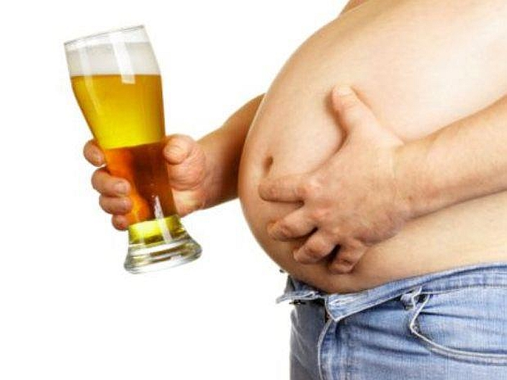

Горькая правда о пиве ... .

Никакое богатство не сможет перекупить влияние обнародованной мысли.
А. С. Пушкин
Несмотря на то что пиво известно уже давно, а хмель в Европе культивируют примерно 1000 лет, до сих пор нет ясности в том, как же действует этот «напиток» на организм человека. С одной стороны, в газетах можно встретить целые оды пиву, заканчивающиеся рекомендациями употреблять пиво беременным женщинам, кормящим матерям, давать пиво младенцам «для лучшего сна», с другой стороны, главный санитарный врач РФ Геннадий Онищенко говорит: «Не СПИД, не туберкулез погубят Россию, а пивной алкоголизм среди юного поколения». Так где же правда? В этой статье я не буду много говорить о действии алкоголя, содержащегося в пиве, а обращу внимание на другие аспекты: расстройства в половой сфере у потребителей пива, присутствие в нем психоактивных и наркотических веществ, наличие в пиве соединений сопутствующих алкогольному брожению, — «сивушных масел». В заключении будут рассмотрены некоторые социальные и экономические аспекты употребления пива.
Давно было отмечено, что употребление спиртного приводит к феминизации мужчив и маскулинизации женщин, т. е. у мужчин появляются некоторые женские признаки и развивается импотенция, а женщины становятся мужеподобными — грубеет голос, характер, появляется растительность на лице. Среди всего разнообразия алкогольных изделий, доступных на данный момент, именно пиво оказывает наиболее негативное влияние на содержание половых гормонов в организме мужчин и женщин. К сути этого явления официальная наука вплотную подобралась только в 1999 году. Оказалось, что в «шишечках» хмеля, используемых для придания пиву специфического горьковатого вкуса, содержится 8-пренилнарингенин (8-ПН) — вещество, относящиеся к классу фитоэстрогенов («фито» — растение, «эстроген» — женский половой гормон)[1].
Подобные соединения находят и в некоторых других растениях, например, в красном клевере, люцерне. Народная медицина давно знала об этом явлении, и поэтому пастухи тщательно следили, чтобы скот не потреблял слишком много таких растений. В противном случае это грозит бесплодием, что и наблюдалось, например, в Австралии при выпасе овец исключительно на красном клевере [2]. Однако следует отметить, что 8-ПН превосходит по своей гормональной силе все остальные фитоэстрогены в 10-100 раз и приближается по активности к человеческому гормону — эстрогену [3]. Факт этот, начиная с 1999 года, активно обсуждается в специализированной научной литературе, но для широкого круга читателей эта информация остается практически закрытой.
Что такое половые гормоны? Половые гормоны регулируют формирование и функционирование половых органов, проявление вторичных половых признаков и некоторые стороны поведения человека. Если говорить о различиях между мужчиной и женщиной, то они в первую очередь определяются тем, что в организме мужчины вырабатывается мужской гормон (тестостерон), а в организме женщины — женский (эстроген). Именно действие этих веществ определяет не только внешнее отличие мужчины от женщины (без них внутренние и внешние половые органы вообще не формируются), но дает мужчине большую мышечную силу, соответствующую фигуру, растительность на лице, мужской голос и характер, а женщине — женскую фигуру, отсутствие волос на лице, более мягкий голос и женский характер.
Если человек начинает принимать несвойственный ему гормон, то его облик, голос, характер стремительно меняются. Этим пользуются люди, которые сознательно хотят изменить свою половую принадлежность.
Важной особенностью гормонов является их высокая активность даже в низких концентрациях. Так, в организме здоровой женщины в сутки вырабатывается всего лишь 0,3–0,7 мг эстрогена, что по весу соответствует половине крупинки сахара! Этого количества вполне достаточно, чтобы человек был женщиной. Действующая концентрация женского гормона в 1 л пива может достигать 0,15 мг в пересчете на эстроген [4]. Здесь, однако, нужно отметить, что 90 % фитоэстрогена в пиве содержится в неактивной форме, но у 30 % европейцев микрофлора кишечника работает таким образом, что переводит гормон в активную форму уже внутри организма — в тонком кишечнике [5].
Что дает пиво мужчине? Мужчина, потребляя пиво, в существенной степени замещает в собственном организме мужской гормон на женский [6]. Раньше мужской гормон давал ему активность, волевые качества, стремление к победе, желание лидировать, а теперь мы получаем безвольное, апатичное существо промежуточного рода, способное лишь лежать на диване и тупо смотреть в телевизор. Далее могут появиться раздражительность и стервозность.
Фигура такого существа тоже меняется — расширяется таз, жир откладывается по женскому типу — на бедрах. Мышцы живота слабеют, и появляется «пивной живот». Разрастаются грудные железы; теперь, заплывшие жиром, они болтаются впереди, интересным образом дополняя облик этого «мужчины». По некоторым данным, в запущенных случаях из этих грудей начинает сочиться молозиво [7].
Сердце, вынужденное каждый день перекачивать излишнее количество жидкости, поступающей с пивом, заметно увеличивается в размерах, его стенки становятся более тонкими и дряблыми, снаружи оно зарастает жиром. Развивается ишемическая болезнь сердца и увеличивается риск инфаркта, физические нагрузки переносятся все более и более тяжело, появляется одышка. Врачи называют этот синдром «пивное» или «баварское» сердце[7].

Постепенно развивается импотенция, влечение к женщине заменяется влечением к алкоголю. «Лучше пиво в руке, чем девка вдалеке», — так звучит рекламный слоган к пиву «Бочкарёв». Разработчики этого рекламного ролика, возможно, даже не подозревают, насколько точно они здесь выразились. Таким образом, подтверждаются слова первого рейхсканцлера Германии Бисмарка: «От пива делаются ленивыми, глупыми и бессильными» (имеется в виду мужское бессилие).
Что отнимает пиво у женщины? Женский организм работает сложнее и изящнее мужского, в нем каждый месяц гормональный фон существенным образом меняется, и вторжение в этот тонкий механизм введением фитоэстрогенов или других гормональных препаратов грозит серьезными последствиями вплоть до бесплодия (как в примере у овец в Австралии). В нормальном состоянии организм женщины сам вырабатывает столько эстрогена, сколько ей в данный момент нужно. Бели женщина пьет пиво и таким образом вводит в свой организм дополнительное количество женского гормона, то это может приводить, как показано в опытах на крысах, к увеличению матки, разрастанию тканей матки и влагалища, выделению излишнего секрета и слизи в фаллопиевых трубах [8, 9], нарушению менструального цикла [3]. Все это ставит под вопрос пригодность такой женщины для продолжения рода. Действие хмеля на женщин было давно известно. Так, их старались не использовать для сборки «шишечек» хмеля на плантациях, поскольку при такой работе у большинства женщин вскоре открывалось кровотечение вне зависимости от внутреннего месячного цикла [1, 3].
Если у мужчин потребление пива снижает влечение к противоположному полу, то у женщин, наоборот, увеличивает, что вносит дисгармонию в семейные отношения. Особенно грустно наблюдать девушку с бутылкой пива в одной руке и сигаретой в другой, висящую на каком-нибудь парне на виду у прохожих. Это можно назвать синдромом «кошачьей течки», когда половое влечение у девушки настолько увеличено, что она уже теряет присущую ей скромность и начинает играть активную, доминирующую роль, навязываясь парню. К сожалению, девушки иногда принимают это за норму и не подозревают о причинах этого психического расстройства. Мимоходом отметим» что в табачном дыме обнаружен целый спектр фитоэстрогенов [10].
Данная статья призывает отказаться от употребления спиртного в любом виде» а не просто перейти с пива на другие алкогольные изделия — вино и водку. Так делают только начинающие алкоголики» постепенно увеличивая крепость и потребляемую дозу! Нужно отметить, что любое спиртное ведет к гормональным нарушениям у мужчин и женщин» поскольку с течением времени алкоголь угнетает функции и приводит к перерождению тканей семенников, яичников, надпочечников и печени» т. о. органов, регулирующих гормональный фон человека. Но основной удар алкоголь наносит по мозгу» убивая его клетки и нарушая в первую очередь самые тонкие функции коры головного мозга. Таким образом, несколько упрощая проблему, можно сказать, что если человек хочет сначала стать моральным уродом, а уже потом импотентом» то он пьет водку, а если предпочитает обратную последовательность — сперва импотенция и уже потом дебилизм, то пьет пиво. Человеку не нужны ни пиво, ни водка. Для человека норма — трезвость, человечность.
Впрочем, мужчин и женщин, пристрастившихся к пиву, можно обнадежить — навсегда расставшись с этим пойлом, они дадут своему организму возможность восстановить изначальный гормональный статус и с течением времени смогут вернуть себе утраченное здоровье. Только отказаться от пива для таких людей порой бывает очень сложно. Почему? Здесь уместно опять вспомнить о хмеле.
С точки зрения ботаники ближайшим родственником хмеля является конопля [11], их даже можно скрещивать и получать гибриды. Конопля является источником таких наркотиков, как марихуана и гашиш. И в хмеле эти наркотические вещества тоже содержатся, пусть и в более низкой концентрации [11]. Помимо этого хмель вырабатывает немного морфина [12] — действующего начала опиума и героина. На самом деле содержащийся в пиве алкоголь тоже является наркотиком — этот факт отмечается в ГОСТ 5964-82 на этанол: «Этиловый спирт… относится к сильнодействующим наркотикам». Но к пиву пристрастие формируется незаметнее и быстрее, чем к другим алкогольным изделиям, а лечится пивной алкоголизм с еще большим трудом, чем обычный. Так, Б. Г. Афанасьев (начальник 1-го психотерапевтического отделения госпиталя А. А. Вишневского) отмечает, что зависимость формируется даже по отношению к безалкогольному пиву, и объясняет это именно влиянием других наркотических веществ. Характерно, что иногда у пивных наркоманов появляются симптомы наркотической ломки [13]. Таким образом, подразделяя наркотики на «стартовые» и «добивающие», отнесем табак и пиво к стартовым наркотикам. Пиво особенно опасно тем, что именно через него осуществляется очень раннее, зачастую до 7 лет, приобщение детей к алкоголю. Это обстоятельство имеет крайне негативные последствия для дальнейшего умственного, физического и полового развития подростков.
Пару слов о том, как делают традиционное пиво. Алкогольное брожение осуществляется на основе ячменного солода, углеводы которого перерабатываются пивными дрожжами в этиловый спирт. Однако, помимо этилового спирта, дрожжи всегда выделяют еще целый «букет» веществ — широкий набор спиртов (метиловый, пропиловый, изо-амиловый и др.), сложные эфиры, альдегиды, кетоны — все то, что известно в народе под названием «сивушные масла». По мере накопления этих ядов и этилового спирта дрожжи погибают, потому что среда становится непригодной для их дальнейшей жизни. Готовое пиво реализуют потребителям, иногда даже не отфильтровав останки этих микроорганизмов. Появляющиеся на сцене гнилостные бактерии не успевают широко развернуть свою деятельность в этой браге. Впрочем, выделяемые ими пусть даже в концентрации 1–3 мг/л продукты гнилостного распада белков, такие как кадаверин («трупный яд») и другие биогенные амины [14], не сулят организму человека ничего хорошего.
В народе правильно говорят: «Пиво — не водка». Действительно, по своим токсикологическим характеристикам пиво с учетом потребляемого количества гораздо хуже водки, оно даже хуже самогона! Ведь производители водки используют для ее приготовления спирт, прошедший специальную очистку. И хотя спирт — это яд, но производители гордятся тем, что очистили его от сивушных масел — еще более токсичных веществ. Согласно ГОСТ Р 51355-99 на водку, содержание в ней сивушного масла не может превышать 3 мг/л, а в пиве содержание этих токсинов составляет 50-100 мг/л! Именно поэтому отравление пивом получается более тяжелым. Однако сивушный привкус в пиве плохо ощущается, потому что он перебит горечью хмеля. Интересно отметить, что в шишечках хмеля также содержаться некоторые высшие спирты, имеющие отчетливое действие на деятельность мозга [11].
Широкомасштабных исследований воздействия пива на организм человека до сих пор не проведено, что, впрочем, понятно, учитывая заинтересованность сторон. Однако есть данные, что употребление пива повышает более чем на 30 % вероятность развития рака груди, причем отсутствует четкая зависимость от выпиваемой дозы пива [15].
Пиво вызывает целый спектр глазных болезней [16]. Риск развития катаракты и макулопатии (дистрофия желтого пятна, ведущая к слепоте) увеличивается в 1,5–3 раза [17, 18], а одновременное курение усиливает негативный эффект [19,20].
Разберем некоторые вредные советы, кочующие по книжонкам «целителей»:
Советы употреблять пиво беременным женщинам можно без преувеличения считать преступными, и настоящая медицина таких рекомендаций никогда не даст! Алкоголь, быстро проникая в кровеносную систему плода, может проявить свои мутагенные свойства и привести к серьезным нарушениям в формирующихся органах и системах младенца. Исследования также выявили, что употребление пива существенно снижает уровень как женских, так и мужских гормонов в околоплодовых водах, а вес новорожденных заметно уменьшается [21].
Пиво может привести к увеличению количества молока у кормящей матери, однако в этом случае младенец уже с первых дней жизни начнет получать алкоголь вместе с молоком матери, что крайне негативно скажется на развитии его органов и «наградит» его предрасположенностью к алкоголизму.
Иногда можно встретить советы давать столовую ложку пива младенцам для лучшего сна, и это действительно работает. Однако, не говоря уже о побочных наркотических веществах, отметим лишь действие спирта на малыша. На организм ребенка этанол действует в 5 раз сильнее, а если еще учесть, что его масса в 12–15 раз меньше массы его мамы, то эта доза в 15 г пива эквивалента 1 л для взрослого. Если его мамаша еще не является поклонницей хмельного зелья, то она может живо представить себе то оглушенное, тошнотворное состояние, которое у нее вызвал бы литр пива, выпитый залпом без закуски. Даже один такой эксперимент — это издевательство над ребенком, а вот если поить молодую маму таким образом насильно в течение месяца-двух, то потом ей уже прямая дорога в наркологический диспансер — она пивной алкоголик. К слову сказать, в СССР специальность детского нарколога введена в 1985 году, до этого ее не было… Хотите обеспечить их работой?! У них дел и так хватает…
Почему люди пьют пиво? Любители этого «напитка» говорят, что им нравится его вкус. Однако большинство людей припоминает, что сначала им не нравился вкус пива, они, скорее, находили его противным, но постепенно привыкли. Это можно сравнить с первой затяжкой табачного дыма: сначала противно, но, пересиливая себя, формируют это пристрастие. Многие любители пива отказываются употреблять безалкогольное пиво, ссылаясь на то, что у него хуже вкус, но статистические исследования показали, что в тестах с закрытыми этикетками они не отличают безалкогольное пиво от обычного [7]! Так почему же пьют пиво? На первом этапе его пьют, чтобы выглядеть «взрослым», а потом его пьют только потому, что в нем есть алкоголь — наркотик. Так что все сводится к вопросу: «Почему люди одурманиваются?» Интересно отметить, что в СССР потребление пива начало заметно расти в 1970–1980 годы, когда государство тщетно пыталось вытеснить водку более слабыми «изделиями» и искусственно занижало цену на пиво. В итоге пиво пользовалось большим спросом именно потому, что это было самое дешевое спиртное в пересчете на алкоголь — на одну копейку можно было приобрести 1,2–1,4 г «пивного» алкоголя и всего лишь 0,5 г — водочного. В 1960 году на душу населения в СССР в год приходилось 13 л пива, в 1970-м — 16 л, в 1980-м — 24 л, в 1985-м — 18 л, к 1990-му потребление вновь поднялось до 23 л, а затем резко упало в связи с заметным удешевлением водки и появлением «питьевого» спирта — пивом стало невыгодно напиваться. Однако к середине 1990-х годов пивоваренная промышленность в России начала оправляться: 1995 год — 12 л, 1998 год — 22 л, 1999 год — 29 л, 2000 год — 37 л. В 2005 году объем пивного рынка оценивается уже в 5 млрд долларов, а потребление превысило 60 л пива на душу населения [21]! Что происходит?!
Пивной рынок стал существенным образом переориентироваться на молодежь, для которой не столько важна цена, сколько «символические свойства» пива, активно продвигаемые рекламой. Важным этапом стала поправка, принятая в 1997 году думой при активном «содействии» пивоваров, которая выводит пиво из-под действия закона, регулирующего рынок алкогольной продукции. Это позволило иностранным корпорациям прийти на наш рынок, наладить здесь крупное производство и сбыт пива, развернуть мощную рекламную кампанию, навязывая соответствующие «ценности» нашим юношам и девушкам. Аналогичные «успехи» и те же методы демонстрируют производители табака, здесь, по данным академика РАМН Н. Ф. Герасименко (Всероссийский форум «Здоровье или табак», май 2007 г.), экспансия иностранных производителей на российский рынок достигает 94 %. Мало кто подозревает, что на данный момент рынок пива в России также контролируется иностранным капиталом. Итак, перечислим основных «игроков» пивного рынка [22], потому что своих врагов мы должны знать в лицо:
Baltic Beverages Holding (Зарегистрирована в Швеции. Основана в 1991 г. финской и шведской пивоваренными компаниями, сейчас принадлежит на паритетных началах компаниям Carlsberg (Дания) и Scottish & Newcastle (Великобритания). Основные заводы на территории России в Санкт-Петербурге, Туле, Ростове-на-Дону, а также меньшие в Самаре и Хабаровске. Вместе со своими дочерними (купленными) компаниями «Пикра» (Красноярск), «Ярпиво» (Ярославль, Воронеж) и «Вена» (Санкт-Петербург, Челябинск) занимает 35,8 % российского рынка (здесь и далее данные на апрель 2006 г.). Производит пиво в основном под следующими марками: «Балтика», «Балтика Кулер» (специально для молодежи), «Арсенальное», «Три Толстяка», «Ленинградское», «Жигулевское», «Невское», имеет целый ряд региональных брендов, например: «Уральский Мастер», «ДВ», «Дон», «Ярпиво», «Волга» «Купеческое», «Легенда» и кое-что выпускает по лицензии: Tuborg, Carlsberg, Foster's, Kronenbourg, Irish Red. Здесь следует отметить, что на данный момент импорт пива в Россию не так велик, и большая часть иностранных марок уже производится внутри страны. Пригрели змею у себя на груди…
SunIterbrew [InBev] (родина — Бельгия) занимает 18,7 % рынка. Основные заводы на территории России в Омске и Клину, а также меньшие в Волжском, Саранске, Перми, Иваново, Курске и Новочебоксарске. Производит пиво в основном под следующими марками: «Сибирская корона», «Клинское», «Толстяк», а также по лицензии Lowenbrau, Beck's, Stella Artois, Hoegaarden, Lele, BagBeer, Brahma (в последнем случае, не понятно, как индусы терпят такое издевательство над одним из наиболее почитаемых богов своего пантеона. Для русских это все равно, что использовать для пива имя «Иоанн Предтеча» — имя величайшего пророка, никогда не употреблявшего спиртного. Впрочем, в погоне за прибылью пивовары на многое способны.)
Heineken (родина — Нидерланды). Основные пивоварни в Санкт-Петербурге и Новосибирске. Вместе со своими сателлитами — группой компаний «ПИТ» (Новотроицк, Хабаровск, Калининград), «Шихан» (Стерлитамак), «Волга» (Н. Новгород), «Степан Разин» (Санкт-Петербург), «Патра» (Екатеринбург), «Байкальская пивоваренная компания» (Иркутск) занимает 13,3 % рынка. Производит пиво в основном под следующими марками: «Охота», «Бочкарев», «Три медведя», «Степан Разин», «Патра». Также использует региональные бренды, например: «Амур-Пиво», «Стрелец», «ПИТ Акапулько», «Окское», «Русич» и выпускает по лицензии Heineken, Amstel, Zlaty Bazant, Edelweiss, Bud, Guinness, Kilkenny, Buckler и Gosser.
Efes Breweries Int. (родина — Турция). Основной завод в Москве, меньшие — в Ростове и Уфе. После приобретения группы компаний «Красный Восток» (Казань, Новосибирск) занимает -12,5 % рынка. Производит пиво в основном под марками: «Старый мельник», «Красный Восток», «Солодов», «Чешский стандарт», «Сокол», «Белый медведь» а также иностранные марки EfesPilsener, Warsteiner Premium Beer, Amsterdam Navigator, Zlatopramenи Bavaria.
SABMiller (основана при слиянии South African Breweries (ЮАР) и Miller Brewing (США), зарегистрирована в Лондоне, существенный пакет акций у Altria Group (бывшая Philip Morris Companies Inc.). Занимает 8,7 % рынка. Имеет единственный завод в Калуге. Использует марки «Золотая бочка», «Три богатыря» и иностранные — Miller, Holsten, VelkopopovickyKozelPilsnerUrquett, Redd's.
Мы так подробно остановились на этих транснациональных компаниях, чтобы показать, как ловко они могут маскировать свою деятельность, скрываясь под десятками, если не сотнями торговых марок, большая часть которых имеет невинные русские названия типа «Амур-Пиво». Таким образом, они контролируют 89 % рынка пива в России, извлекая соответствующую и отнюдь не малую прибыль. Оценив стоимость литра пива в России на данный момент, учитывая уровень потребления в ~60 л на душу населения в год и умножив это на 142 млн российских «душ», вы можете самостоятельно подсчитать оборот этих компаний…
Интересно отметить, что в странах Западной Европы потребление пива снижается, даже в Германии и Бельгии, но производство при этом растет. Излишки этого плебейского пойла сливают в страны третьего мира.
Пойлом для плебеев пиво считалось в Римской империи. Сами римские граждане пиво не пили, а смердов, напивающихся пивом, презирали, считая скотиной. Таким образом, эти иноземные «благодетели» совмещают приятное с полезным — набивают свои карманы и очищают нашу страну от «излишнего» населения. Выполняют завет, озвученный Мадлен Олбрайт (бывший госсекретарь США) в 2000 году: «По мнению мирового сообщества, в России экономически целесообразно проживание 15 млн человек…»

Последим пожелание «Иванам»…
Мы славно гуляли в республике вашей,
Мы доллары черпали полною чашей.
Пока вы тут пили, мы вас разорили,
Заводы продали, богатыми стали.
И вам всем «здоровья», «живите богато»,
А мы отправляем ресурсы на Запад.
И чтобы ни крошки у вас не осталось,
И чтобы здоровых детей не рождалось.
За ваши ресурсы дадим мы вам шприцев,
И спирта цистерны, до смерти упиться.
Наркотики в вены вливайте «богато»,
Валяйтесь, как свиньи, вблизи вашей хаты.
Для нас вы все быдло: дерьмо, папуасы,
Зачем папуасам земные запасы?
Вы слышите, свиньи, мы стали богаты,
Мы скоро отнимем у вас ваши хаты.
Дадим казино, сигареты, секс-фильмы.
Курите и пейте, рожайте дебильных.
Больные, уроды для нас не опасны –
Мы их уничтожим поддельным лекарством.
Вы все постепенно умрете бомжами,
И долю такую вы выбрали сами.
И ваша земля, нам нужна без народа.
Мы вас похороним в любую погоду.
Так будьте «здоровы», «живите богато»,
Насколько позволит вам ваша зарплата.
А если зарплата вам жить не дозволит —
Так вешайся, быдло, — никто не неволит.
Автор неизвестен